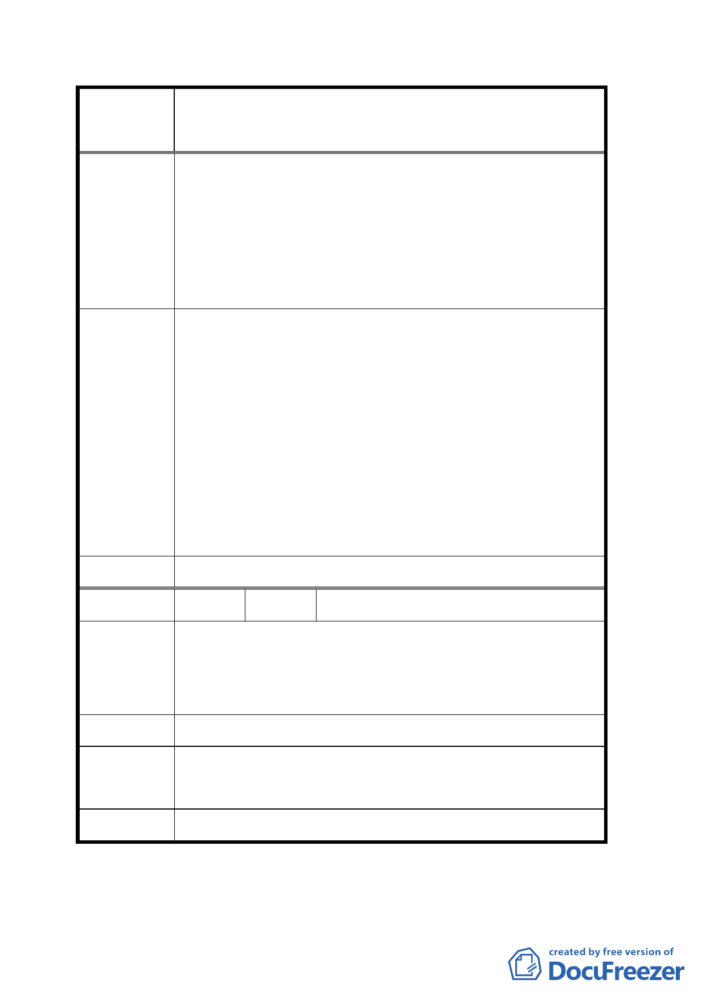

變更臺北市文山區原義芳化工廠附近地區都市計畫
案名
案
4.山區公園及墳墓應訂定明確規劃開發及遷移期程，且進
行景觀規劃，並與本案同步進行。
5.公園設施內容應進行問卷調查，了解當地居民需求。
6.規劃為全市性的綜合運動公園，供市民進行各項休憩運
動，並且在地下設置停車場。
1.支持發展局保留週邊第三種住宅區規劃，以作為未來籌
措本案開發財源之來源。
2.忠勤山莊部分未納入本計畫範圍。
專案小組審 3.環保局資源回收站之遷移時程請另洽市府環保單位。
查 結 論 4.北側第二種住宅區變更為公園之規劃，請市府於兩個月
內以另案辦理個案變更方式處理。
5.另有關公園規劃設計相關建議，留供公園處規劃設計參
考。
委員會決議 同專案小組審查結論。
編 號 ３ 陳情人 國有財產局
有關本局經管之文山區興隆段三小段 218 地號土地，基於
陳 情 理 由 國有畸零土地應與毗鄰私有建地合併建築使用為原則，及
國產權益立場，仍請維持原使用分區為住宅區。
建 議 辦 法 仍請維持原使用分區為住宅區。
專案小組審 由於該筆土地地形過於狹長，維持原分區確實影響公園及
查 結 論 住宅區完整性，仍依原公展計畫變更。
委員會決議 同專案小組審查結論。
討論事項四
一七